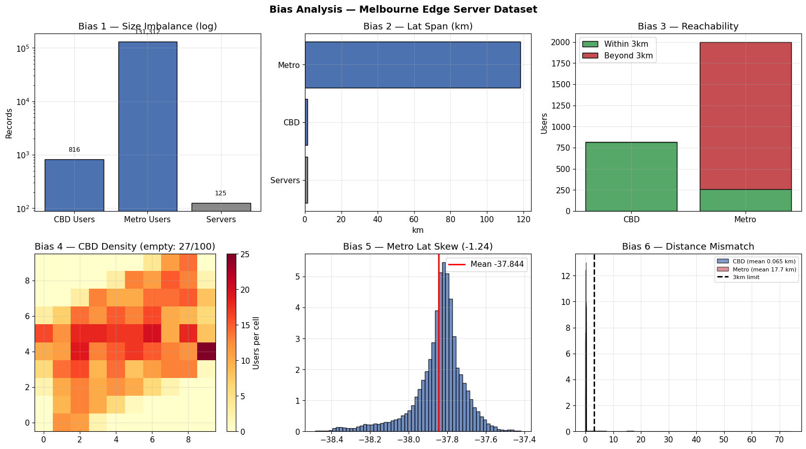
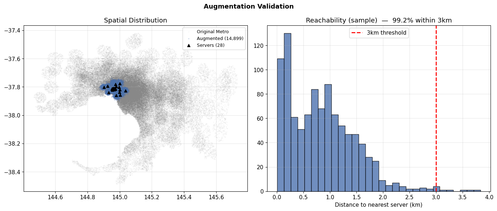
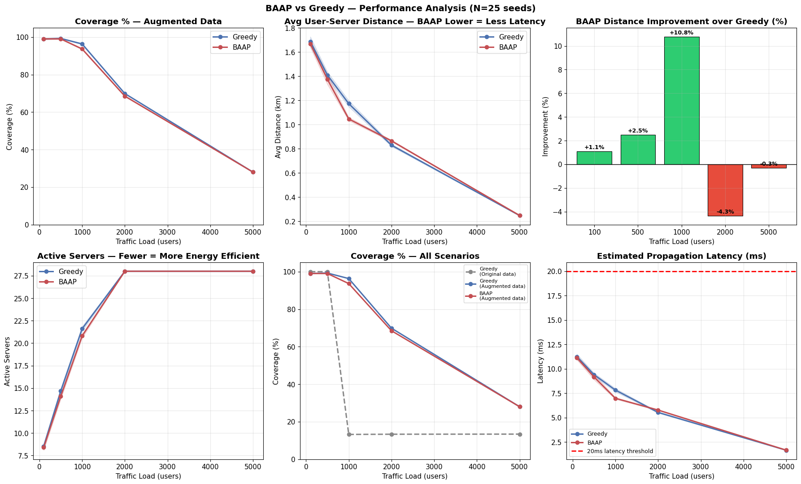

A solutions engineering case study on dynamic edge server placement — built on real Optus Melbourne infrastructure data, an MSc dissertation graded 86%, and a novel placement algorithm (BAAP) evaluated across 25 repeated simulation runs.
Every number below comes from the actual 25-seed evaluation in the dissertation — nothing here is illustrative. Five traffic levels, two algorithms, real trade-offs.
Before touching the algorithm, the underlying simulation data itself was audited. Seven checks surfaced nine distinct biases — the most severe of which capped coverage at 13.2%, regardless of which placement algorithm ran on top of it.

Six of the nine biases identified, run against the real Optus Melbourne CBD server dataset (125 sites) and generated user datasets (816 CBD, 131,312 metro). Bias 3 alone — reachability — showed 87% of metro users had no server within 3km, the latency-relevant range.
Kernel Density Estimation sampling, Gaussian Mixture Model-generated suburban users, deduplicated server sites, and an expanded server network — combined, these lifted coverage from 13.2% to 96.3%, a 629% relative improvement, before BAAP was even introduced.

Left: the real spatial spread of augmented users (grey) against the original metro footprint, with the 28 expanded server sites (triangles) and their 3km coverage radius (blue). Right: 99.2% of a 1,000-user sample now falls within reach — coverage now fails for a genuine reason (servers reaching capacity), not a data artifact.
The 629% improvement came entirely from fixing the data — not from a smarter algorithm. That finding shaped everything that followed: it's the difference between over-engineering a placement algorithm and first asking whether the evaluation environment can even produce a meaningful answer.
Once the environment was trustworthy, BAAP was designed to go one step further than the greedy baseline — weighting each user's importance by how under-represented their area is in the recorded data, not just by raw visible demand.
Sparse, under-recorded areas get more weight; every user retains at least a 0.1 minimum contribution. Same asymptotic complexity as the greedy baseline — no deployment cost trade-off.

At load 1,000, BAAP places served users 10.8% closer to their server on average (1.05km vs 1.17km) — translating to roughly 0.6ms less propagation-related latency. Every scenario stays under the 20ms latency threshold used throughout this study.
BAAP is not a strict win. At load 1,000 it served 93.7% of users vs Greedy's 96.3% — 2.6% fewer people, in exchange for the ones it did serve being meaningfully closer to their server. At load 2,000, Greedy was actually the closer option. No single algorithm wins at every traffic level — a solutions conversation about this should present that trade-off, not hide it.
This briefing is a condensed view. The full technical record is available underneath it.